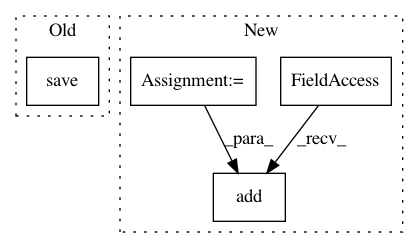

14d296009281bee1b55ed42adffd6e8fe7975d6a,dipy/viz/tests/test_ui.py,,test_ui_checkbox,#Any#,555
Before Change
// 10. Click on button of option 3.
show_manager.record_events_to_file(recording_filename)
print(list(event_counter.events_counts.items()))
event_counter.save(expected_events_counts_filename)
else:
show_manager.play_events_from_file(recording_filename)
expected = EventCounter.load(expected_events_counts_filename)
After Change
del show_manager
if interactive:
checkbox_test = ui.Checkbox(labels=["option 1", "option 2\nOption 2",
"option 3", "option 4"],
position=(100, 100))
showm = window.ShowManager(size=(600, 600))
showm.ren.add(checkbox_test)
showm.start()
@npt.dec.skipif(not have_vtk or skip_it)
In pattern: SUPERPATTERN
Frequency: 3
Non-data size: 4
Instances
Project Name: nipy/dipy
Commit Name: 14d296009281bee1b55ed42adffd6e8fe7975d6a
Time: 2018-08-13
Author: marc.cote.19@gmail.com
File Name: dipy/viz/tests/test_ui.py
Class Name:
Method Name: test_ui_checkbox
Project Name: nipy/dipy
Commit Name: 14d296009281bee1b55ed42adffd6e8fe7975d6a
Time: 2018-08-13
Author: marc.cote.19@gmail.com
File Name: dipy/viz/tests/test_ui.py
Class Name:
Method Name: test_ui_radio_button
Project Name: comic/grand-challenge.org
Commit Name: 719f9dcc37a8b4ffacdeb89f091349048aef8732
Time: 2020-06-25
Author: 12661555+jmsmkn@users.noreply.github.com
File Name: app/grandchallenge/algorithms/models.py
Class Name: Job
Method Name: create_result